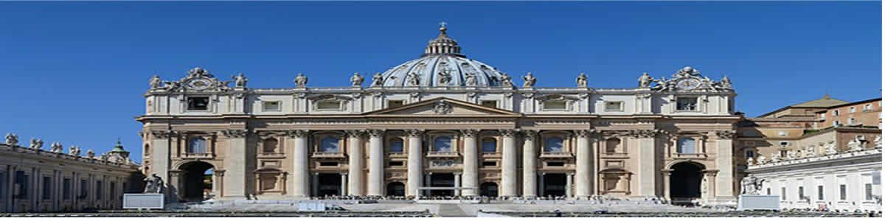

Diocèse de Nkongsamba
La Curie Diocésaine
Notre Mission
Évangéliser le peuple de Dieu par l’offrande de pouvoirs spirituels et matériels pour la gloire de Dieu et le salut des âmes.
Notre Vision
Évangéliser le peuple de Dieu en offrant des moyens spirituels et matériels pour la gloire de Dieu et le salut des âmes.
Notre Devise
Quod Manus Nostrae Contrectaverunt
Ce que nos mains ont touché.